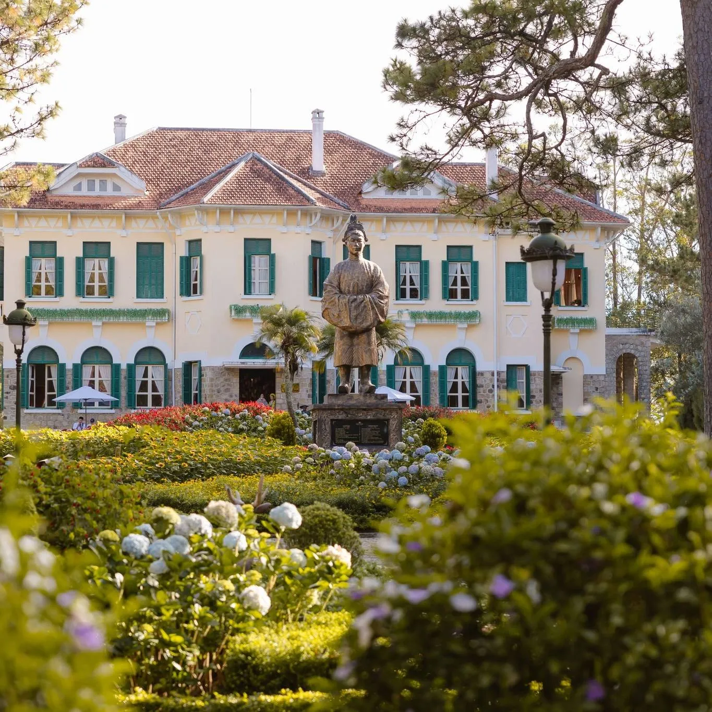
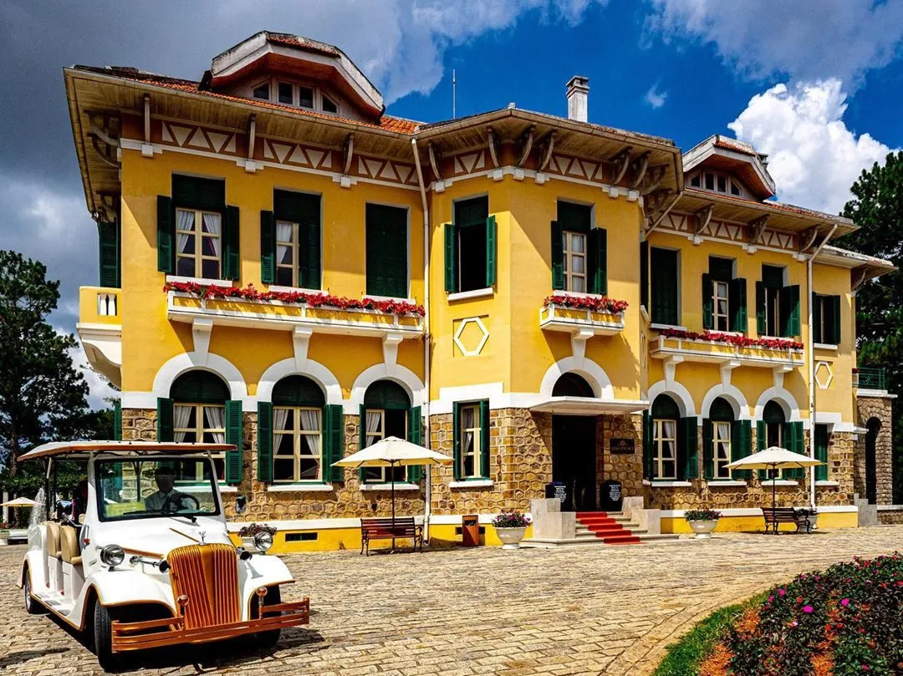
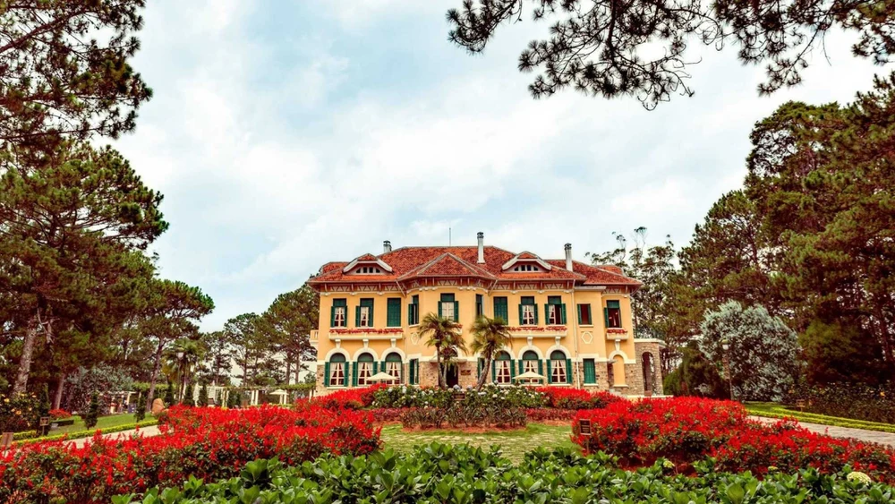
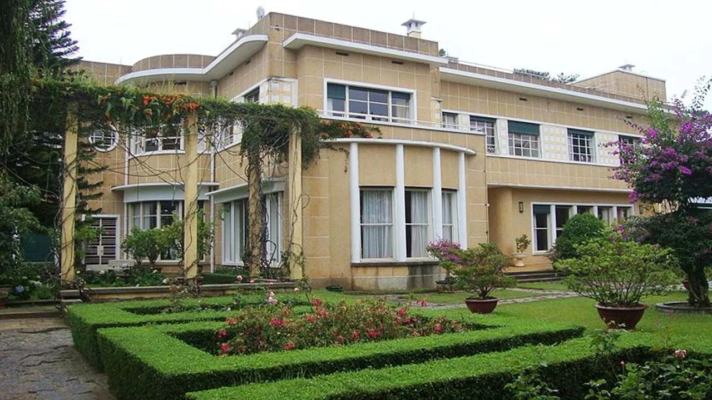

Bao Dai Da Lat Palace - Outstanding historical site that you should visit

Table of Contents
*Bao Dai Da Lat Palace* is one of the prominent tourist destinations when exploring the city of flowers. Associated with the last king of the Nguyen Dynasty, this place not only preserves historical and cultural values but also possesses typical classic French architecture. With a large space, surrounding pine forests and cool climate all year round, Bao Dai Palace brings peace, nostalgia and is the ideal check-in point for all tourists when coming to Da Lat.
1. What is special about Bao Dai Palace in Da Lat?
Bao Dai Da Lat Palace is a unique stop when exploring the foggy city. With architecture bearing European influences, this place recreates the luxurious living space of Vietnamese royalty in the early 20th century. Each mansion tells a unique story, reflecting the aesthetic taste and lifestyle of King Bao Dai - the last king of the Nguyen Dynasty.
In addition to their historical value, these three mansions also attract tourists by their peaceful natural scenery, surrounding pine forests and fresh air - creating a relaxing space in the heart of bustling Da Lat city.
1.1.Location & how to get to Bao Dai Palace in Da Lat

The system of Bao Dai Palace in Da Lat includes three main palaces: Dinh I, Palace II and Palace III, located in convenient locations, easy to find and suitable for sightseeing trips:
-
Dinh I: No. 1, Tran Quang Dieu Street, Ward 10
-
Dinh II: Intersection of Tran Hung Dao, Ba Thang April and Ho Tung Mau, Ward 10
-
Dinh III: No. 1, Trieu Viet Vuong Street, Ward 4
Visitors can easily travel by motorbike, car or taxi from the city center.
1.2. History of Bao Dai Palaces in Da Lat
#### Palace I – King Bao Dai's headquarters
-
Built in the early 1940s, on an 18-hectare pine hill.
-
Originally the private residence of a French businessman, it was later used by King Bao Dai during his time as Head of State (1949–1955).
-
It has luxurious European architecture and a royal interior.
-
Currently in the stage of converting functions, temporarily closed to welcome guests.
#### Palace II – A mark of the French colonial period
-
Built in 1933, area more than 26 hectares.
-
Used to be the resort of Indochina Governor General Jean Decoux.
-
Mang
-
Classic French architectural style, surrounded by pine forests and flower gardens.
-
An attractive destination for those who love French history, art and architecture.
#### Palace III – Living space of the royal family
-
Built from 1933 to 1938, designed by two French architects.
-
It is the residence of King Bao Dai and Queen Nam Phuong.
-
Opened to welcome visitors since 1985, preserving many precious artifacts.
-
This is the best preserved and maintained mansion of the three.
2. Experience at Bao Dai Palace in Da Lat
Each mansion in the cluster Bao Dai Palace Da Lat has its own unique features, from architecture to living space:
-
Dinh I: Hidden in the middle of the pine forest, ancient space, luxurious interior.
-
District II: Magnificent with 25 rooms, exquisite decorative details, and carefully cared for gardens.
-
District III: More modern with flat roof, square shape, harmonious layout - suitable for sightseeing and photography activities.
2.1. Learn about feudal culture at Bao Dai Palace

Not only is it an architectural sightseeing place, Da Lat Bao Dai Palace is also a place that preserves the imprint of Vietnamese feudal culture.
Visitors will discover:
-
Royal interior decoration
-
Precious historical artifacts
-
The living space reflects the lifestyle, thinking and social roles of the royal family of the Nguyen Dynasty
Stories revolving around the life of King Bao Dai will help you better understand the turbulent historical context during the East-West interference period.
2.2. Check-in virtually at Bao Dai Palace

The three villas are all located in a campus filled with trees, flowers and the chilly atmosphere typical of Da Lat.
This is the ideal background for photos:
-
Ancient French architecture, tiled roof, multi-pane glass windows
-
Moss-covered stone steps and romantic tree arches
-
Vast pine garden, fresh green flowers and leaves
👉 An extremely chill virtual living location, helping you preserve beautiful moments during your trip.